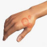

Tinea corporis
Rx
1.Cream clotrimazole 1% N=1 q12h for1-3w
Or Cream Miconazole 2% N=1 q12h
Or Cream Terbinafine 1% N=1 q12h
Or Tab Terbinafine 250mg N=14 daily
2.Solution Burrows N=1 q8h
نکته: معمولا بصورت پلاک های حلقوی در تنه دیده میشود.
نکته:بیشتر درمناطق گرمسیری و درسربازان شایع است
نکته: درموارد مقاوم یا وسیع از فرم خوراکی تربینافین میتونین استفاده کنید.
1️⃣ پسوریازیس
2️⃣ درماتیت آتوپیک
3️⃣ درماتیت سبورئیک
4️⃣ کاندیدیازیس جلدی
5️⃣ اریتم مولتی فرم
6️⃣ اریتراسما
7️⃣ زرد زخم
8️⃣ پتریازیس روزه آ
Tinea Versicolor 9️⃣
🔟 لوپوس پوستی
1️⃣1️⃣ کهیر